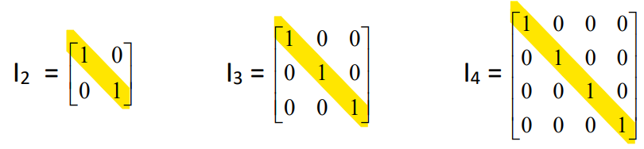

As matrizes são tabelas com valores numéricos organizados de acordo com a necessidade. Os elementos são dispostos em m linhas e n colunas, sendo m, n ≥ 1.
Definição Formal de Matrizes, disponibilizada pela professora Dra. VALÉRIA ESPÍNDOLA LESSA, no material didático: MD2 - MATRIZES, na página 2, disponível no SIGAA, para a turma de informática do segundo ano, de 2024, do IFRS, Campus Erechim.
Matriz linha e Matriz Coluna, disponibilizada pela professora Dra. VALÉRIA ESPÍNDOLA LESSA, no material didático: MD2 - MATRIZES, na página 2, disponível no SIGAA, para a turma de informática do segundo ano, de 2024, do IFRS, Campus Erechim.
Diagonal principal e diagonal secundária.
Diagonal principal e diagonal secundária, disponibilizada pela professora Dra. VALÉRIA ESPÍNDOLA LESSA, no material didático: MD2 - MATRIZES, na página 3, disponível no SIGAA, para a turma de informática do segundo ano, de 2024, do IFRS, Campus Erechim.
Matriz diagonal é uma matriz quadrada onde tem os elementos diferentes de zero apenas na diagonal principal
Matriz Diagonal, disponibilizada pela professora Dra. VALÉRIA ESPÍNDOLA LESSA, no material didático: MD2 - MATRIZES, na página 3, disponível no SIGAA, para a turma de informática do segundo ano, de 2024, do IFRS, Campus Erechim
Matriz Identidade é uma matriz quadrada onde os elementos da diagonal principal é 1, e os outros é zero.
Matriz Identidade, disponibilizada pela professora Dra. VALÉRIA ESPÍNDOLA LESSA, no material didático: MD2 - MATRIZES, na página 3, disponível no SIGAA, para a turma de informática do segundo ano, de 2024, do IFRS, Campus Erechim.
Matriz Triangular tem os elementos zerados acima ou abaixo da diagonal principal
Matriz Triangular, disponibilizada pela professora Dra. VALÉRIA ESPÍNDOLA LESSA, no material didático: MD2 - MATRIZES, na página 3,
A adição de matrizes só pode ser feita com matrizes de mesma ordem, é ela é feita da seguinte forma: O elemento a11 da primeira matriz junto com o elementos b11 da segunda matriz, vão resultar no elementos c11 da matriz de resultado. O a12 + b12 = c12.
A multiplicação de matrizes por um escalar, é multiplicar todos os elementos da matriz pelo escalar.
Para que seja possível a multiplicação entre matrizes, é necessário que o número de colunas da primeira matriz seja igual ao número de linhas da segunda matriz. Explicando: A matriz A é de ordem (a x b) e B é uma matriz de ordem (b x c), então o produto das duas matrizes gera uma terceira matriz que é a matriz C de ordem (a x c).
COMO CALCULAR?
Tendo uma matriz A e outra B, multiplicando as linhas da matriz A pelas colunas da matriz B, elemento por elemento, e somando ao final.
Modelo de Multiplicação de Matrizes 2x2, disponibilizado pela professora Dra. VALÉRIA ESPÍNDOLA LESSA, no material didático: MD2 - MATRIZES, na página 6, disponível no SIGAA, para a turma de informática do segundo ano, de 2024, do IFRS, Campus Erechim.
Consiste em modificar a ordem da matriz, uma matriz AT era A(m x n) e se transformou em uma A(n x m), porém mantendo os mesmos índices. Ou seja, copiando a primeira linha da matriz e reescrevendo ela, mas agora na vertical.
São operações realizadas com a matriz da figura, para modificar a figura original. Consiste em somar ou multiplicar a matriz por uma matriz específica, muito importante lembrar, que essa matriz sempre deve ser na frente da multiplicação.
TRANSLAÇÃO - É feita somando ou subtraindo outra matriz.
REFLEXÃO - É feita através da multiplicação da matriz por uma matriz específica, que deve ser colocada na frente da matriz da figura.
ROTAÇÃO - É realizada através da multiplicação com uma matriz específica com cosseno e seno do ângulo a ser modificado.
ESCALA - É realizada através da multiplicação por outra matriz específica, que aumenta ou diminui seu tamanho.
Dante (2013) volume 2, p. 97-105.
Questão 7 da prova: Anuidades, Matrizes e Determinantes, realizada pelos estudantes Germano Bertan e Vitória Aschidamini Dall’Agnol, aplicada pela professora Dra. VALÉRIA ESPÍNDOLA LESSA, na aula do dia 10/07/2024, para a turma de informática do segundo ano, de 2024, do IFRS, Campus Erechim, no componente curricular de Matemática II.
Trabalho sobre operações com matrizes nas disciplinas de Matemática II e Desenvolvimento de Web II.